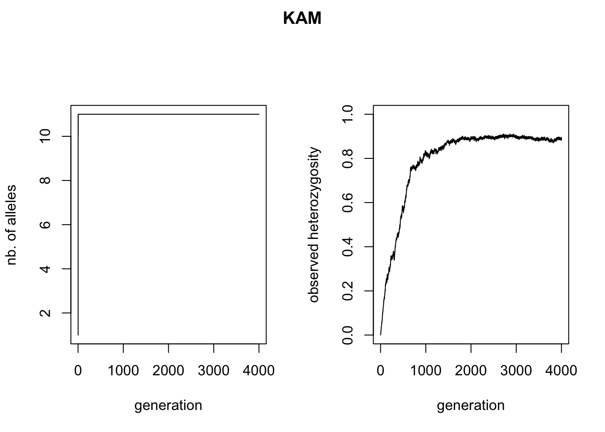
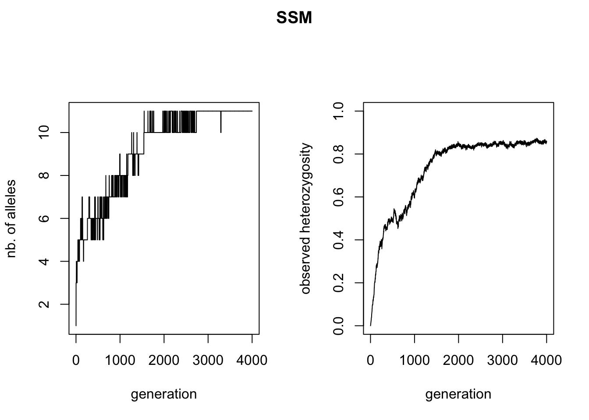
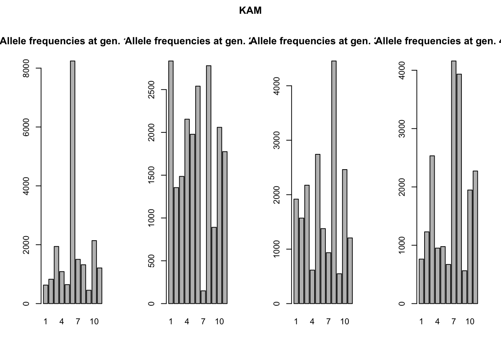
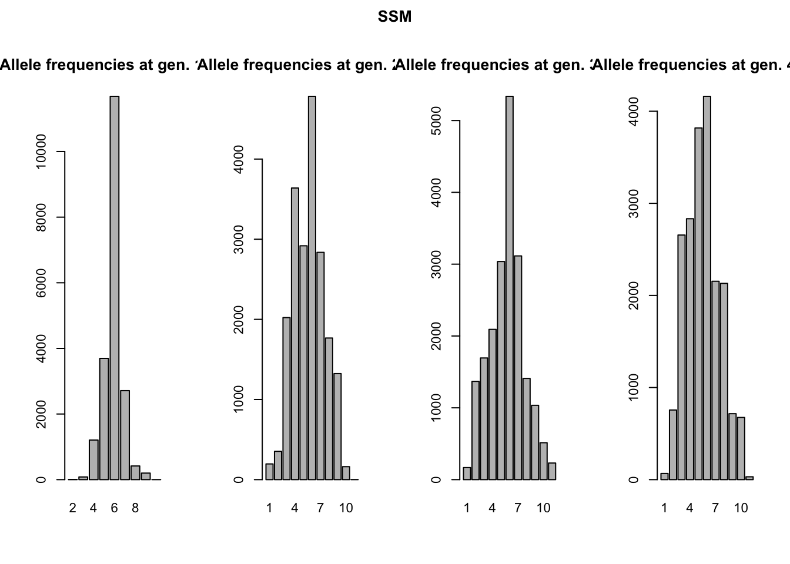
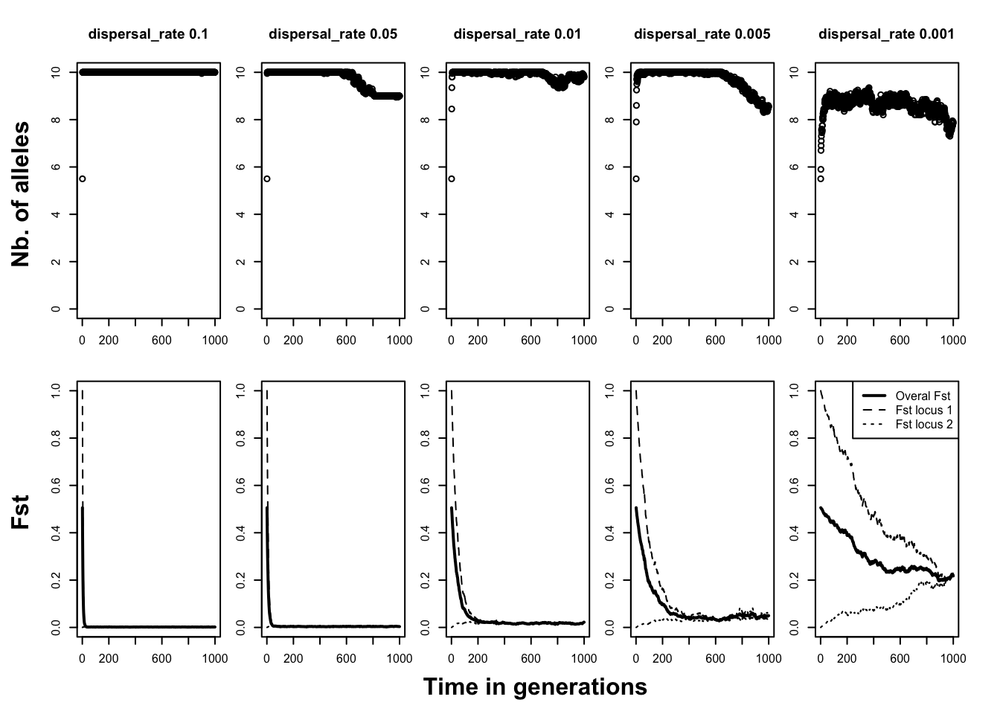

Neutral markers
2 Neutral markers
Some first notes
In our first tutorial, we only looked demographics, how population sizes change over time and space. However, in biology we are often interested in how several populations relate to each other. Are they completely isolated from each other or, in fact, a single population? To find this out, biologists have turned to genetics, using neutral genetic variation of e.g. microsatellites or AFLPs among populations to answer their questions of population connectivity. QuantiNemo (qN) allows you to model the genetic makeup of your individuals and follow the population genetics.
This tutorial will demonstrate how to create a genetic architecture, load genetic information into quantiNemo (qN) and how to retrieve the proper statistics.
2.1 Mutation models
Population genetic analyses are dependent on the presence of genetic variation in the population at a certain locus. This variation can arise either through mutation or migration. To start we will visualise and compare two different process of mutation in qN and look at the accumulation of alleles of a neutral locus over time in a single, isolated population consisting of 10’000 randomly mating hermaphrodites.
Since qN default settings assumes a single, isolated population of randomly mating hermaphrodites, we do not need to specify any of those parameters. However, if we want to introduce a single neutral locus to our population, we will have to tell it to qN by introducing the follwing in the input file:
ntrl_loci 1
Next, we will have to specify how many alleles could possible exist for this locus. In theory, an infinite amount of potential alleles could mutate into existence, but with many neutral loci, this is actually not the case.
Microsatellites have an minimum repeat of one, and often some maximum length can also be observed. SNP’s theoretically have four possible alleles (G C A T), but in practise are mostly biallelic, as are AFLPs. For the sake of this exercise, we select a slightly larger number alleles:
ntrl_all 11 # default is 255 alleles
qN can maximally have 256 alleles per locus, but due to the architecture of qN, it is often better to pick an odd number of alleles, so that one allele is the ‘middle allele’.
Even though it is possible for our population to finally have 11 different alleles in the population, we will let our population start off monomorphic, i.e. all individuals are homozygous for the ‘middle allele’:
ntrl_ini_allele_model 1
# 1= population starts monomorphic;
# 0 (default)= population starts (maximally) polymorphic
Next we will define the mutation rate of this locus. What is the probability that an allele will mutate from one generation to the next? This depends on many factors and can be anything from a thousandth to a billionth. We will set it relatively high for this exercise.
ntrl_mutation_rate 1e-3 # or 0.001; qN recognizes both notations
We will have to decide what actually happens when a mutation occurs. qN offers two options: 1) if an allele mutates it will mutate to any other allele with equal probability (the K-Allele Model); or 2) if an allele mutates it can only mutate one allele higher or one allele lower (the Single Step Mutation model). This last option corresponds to how microsatellites are expected to mutate; a microsatellite of 4 repeats will only mutate to 3 repeats of 5 repeats. See the section 7.4 ‘Mutation’ for more information. In this section we would like to demonstrate the difference between these two options, so we will run our simulation twice. Once
ntrl_mutation_model 0 # = KAM
and once
ntrl_mutation_model 1 # = SSM
Lastly, we will have to think about output. We could, as in the previous chapter, save output such as the size of the population. But since our population will start at its carrying capacity and is not undergoing any selection, migration or extinction, demographic parameters are not going to be very interesting.
Question: Based on the default options we are using for breeding in our current scenario, how do you expect the demography to behave in our simulation?
Instead we could have a look at section 10.3 ‘Summary statistics’ of the manual to see statistics potentially more interesting for our current simulation. Because we are currently interested in the accumulation of new alleles over time, we will pick three statistics commonly used to reflect allelic diversity: the number of alleles present, observed heterozygosity (HO) and expected heterozygosity (HS).
Question: Often studies report allelic richness instead of the absolute number of alleles. qN can report the allelic richness, but why does this make little sense to call this in our current scenario?
stat { n.adlt.nbAll n.adlt.ho n.adlt.hs }
But beside these summary statistics, qN can also give you as output the actual genotype of each individual for each generation. Since we would like to see which alleles exactly arise first, we need this option
ntrl_save_genotype 1 # 1 = save standard genotype output
It will now save for each generation the genotype of each individual. However, we do not need that much data, we will not be inspecting these files for each generation! As we are going to run the simulation for 4000 generations, that would be a lot of data, and would slow down the simulation considerably. Instead, we can tell qN to only save this file every 1000 generations.
ntrl_genot_logtime 1000
(N.B. A similar parameter exists for the general statistics output, named stat_log_time.)
Now we are ready to go: make two different setup files, one with the KAM mutation model and one with SSM. Add all the other parameters mentioned above - do not forget to specify patch_capacity 10000 - and let them both run with generations 4000. We called the two files mutationKAM.ini and mutationSSM.ini.
As usual a results folder will have been created when you started the simulation. Opening it you will find that, besides the usual five simulation text files, four new.dat files have been made: one for each 1000 generations.
1 1 11 2
n1_l1
1 0606
1 1106
1 0606
1 0606
1 1006
etc…
The first line of this file contains four numbers, see the manual, section 10.4 ‘Raw data’ for their meaning. Below are the names of all the loci, in our case only one, with the default name n(eutral trait)1_l(ocus)1.
Below it we see two columns. Each line represents an individual from our simulation. The first number of each line is the patch number (in this case always ‘1’ since we have only one patch), the second number is the genotype. The genotype consists always of four digits, the first two digits representing the first allele, the last two representing the second allele (e.g. genotype 0807 is a heterozygote, with one allele 08 and one allele 07).
The goal of the current section was to demonstrate the differences between the two mutation processes, one of the main sources of variation in qN. Let’s first look at the accumulation of alleles and heterozygosity (a summary statistic often used for allelic diversity in population genetics) over time. We can use R to read the data from our simulation_stats.txt file as in the previous tutorial and plot the number of alleles and heterozygosity against time.
Question: Why do the observed and expected heterozygosity produce practically the same figure?
# Update this line according to where
# you saved the simulation's result.
reps = c("neutral_genetic/mutationKAM/",
"neutral_genetic/mutationSSM/")
for(rep in reps){
setwd(rep);
myfile<-"simulation_mean.txt"
sim_stat<-read.table(myfile,h=T)
mutation.model <- substr(rep,nchar(rep)-3,nchar(rep)-1)
# Plotting number of alleles and heterozygosity over time
par(mfrow=c(1,2),oma=c(0,0,2,0))
plot(sim_stat$generation, sim_stat$n.adlt.nbAll, type='l',
xlab="generation", ylab="nb. of alleles")
plot(sim_stat$generation, sim_stat$n.adlt.ho, type="l",
xlab="generation", ylab="observed heterozygosity",
ylim=c(0,1))
title(mutation.model, outer=TRUE)
setwd("../..")
}
Though the curves of the two HO graphs are similar, the KAM figure plateaus out a bit higher than the SSM figure. Why this is, we can see in the left figures: the KAM simulation has all of the possible alleles present in the simulation, whereas the SSM simulation fluctuates between 8 and 10 alleles present, maximal heterozygosity will therefore be lower.
A more stunning difference between the two mutation models is that all alleles have come into existence after 2(!) generations of the KAM simulation, whereas the SSM simulation shows a much slower accumulation of alleles over time and almost never has all alleles present at the same time. This might seem a bit surprising, since both simulations had the same mutation rate. We would expect the accumulation over time of mutations, and therefore alleles, to be equal in both simulations. We will use the genotype files to illustrate what is different between the two mutation processes. We can read the files in R (make sure to skip the first line), split the genotypes into two alleles and create allele frequency plots (see the included ‘neutral_genetic.Rmd’ script for example code). What you get are the allele-frequency charts below.
reps = c("neutral_genetic/mutationKAM/",
"neutral_genetic/mutationSSM/")
for(rep in reps){
setwd(rep);
mutation.model <- substr(rep,nchar(rep)-3,nchar(rep)-1)
# Retrieving the genotypes of all individuals
# (goes automatic, no need to select files):
# - after 500 generations
gen1000<-read.table("simulation_g1000.dat",h=F, skip=2, colClasses="character")
all1000<-as.numeric(c(substr(gen1000[,2],1,2),
substr(gen1000[,2],3,4)))
# - after 1000 generations
gen2000<-read.table("simulation_g2000.dat",h=F, skip=2, colClasses="character")
all2000<-as.numeric(c(substr(gen2000[,2],1,2),
substr(gen2000[,2],3,4)))
# - after 1500 generations
gen3000<-read.table("simulation_g3000.dat",h=F, skip=2, colClasses="character")
all3000<-as.numeric(c(substr(gen3000[,2],1,2),
substr(gen3000[,2],3,4)))
# - after 2000 generations
gen4000<-read.table("simulation_g4000.dat",h=F, skip=2, colClasses="character")
all4000<-as.numeric(c(substr(gen4000[,2],1,2),
substr(gen4000[,2],3,4)))
# Plotting the genotype frequency data
par(mfrow=c(1,4), cex=0.7,oma=c(0,0,2,0))
barplot(table(all1000), main="Allele frequencies at gen. 1000")
barplot(table(all2000), main="Allele frequencies at gen. 2000")
barplot(table(all3000), main="Allele frequencies at gen. 3000")
barplot(table(all4000), main="Allele frequencies at gen. 4000")
title(mutation.model, outer=TRUE)
setwd("../..")
}
Remember both simulations had the same starting conditions: all individuals were homozygous for the ‘middle allele’, in this case allele 6. The chance for these alleles to mutate is equal in both simulations. However, how these alleles mutate is different. In the K-Allele Model, an allele has the same probability to mutate into any other allele (with 10 other alleles, the probability for each allele is therefore 1/10th). The result is that all alleles have the same likelihood to come into being, and indeed after a 1000 generations all alleles are present in more-or-less similar proportions. After 4000 generations, allele 6 is not even the most prevalent anymore; a more-or-less uniform distribution of alleles has arisen.
In the Single Step Mutation model, when an allele mutates, it can only mutate one up, or one down. The chance for a new allele to appear is therefore not equal for all alleles! In the first generation, only alleles 5 and 7 could possibly come into being, all other alleles have a probability of null to appear. It will take at least five generations for allele 1 to even be possible to appear. Moreover, alleles 1 and 11 have ‘edge effects’. They can only mutate back to alleles 2 and 10 respectively. This makes that the middle allele will always be one of the more frequent alleles in the simulation.
The two different mutation models create some clear differences in the accumulation of gene diversity. None of the two is ‘better’ or ‘more realistic’. What mutation model to choose, really depends on the question one wants to answer, if at all relevant.
Question: what will happen to the allele distributions if we let these simulations run even longer? And what if we let our simulations start with everybody’s initial genotype being 0101?
2.2 An example of breakdown of differentiation through migration.
In section 2.1 we looked at mutation in qN as a source of genetic variation in a population. A different source of new alleles for most wild populations is migration.
In this section we will look at the interaction between migration and genetic diversity. We will create a scenario of ten separated populations, each fixed for a different allele at the same neutral locus, where migration has suddenly become possible. We will then study how long it takes for migration to break down the differentiation between populations.
First some basics. We need ten populations each consisting of 1000 of our default randomly-mating hermaphrodites. The sites will be connected according to the so called migrant-pool island model. For this migration model each site is assumed to be connected equally strong to each other site, effectively eliminating any influence of geography. (Though this might sound as very artificial, it is a model very often used in population genetics and is indeed the default in qN.) Since we do not have to mention any of our default parameters, the first part of our model will contain only this this:
patch_capacity 1000
patch_number 10
Now we need to start specifying our genetic architecture. We wanted a single locus, with ten different alleles, each fixed in a different population. But for comparison’s sake, we will also introduce a second locus with a shared allele distribution among populations:
ntrl_loci 2
ntrl_all 10
ntrl_allelic_file “inifreq.txt”
You will notice that here we only specified the two loci with each ten alleles, but we have not specified the initial allele frequencies of these two loci. In fact, it is impossible to specify a specific initial allelic distribution within the setup file. For that you will need to create a separate file with this information. The name of that file is specified by the last argument. The file inifreq.txt is shown below.
[FILE_INFO]{
col_locus 1
col_allele 2
col_ini_freq 3
}#locus allele initial frequency
# 1 2 3 4 5 6 7 8 9 10 = the population identifier
1 1 {1 0 0 0 0 0 0 0 0 0}
1 2 {0 1 0 0 0 0 0 0 0 0}
1 3 {0 0 1 0 0 0 0 0 0 0}
1 4 {0 0 0 1 0 0 0 0 0 0}
1 5 {0 0 0 0 1 0 0 0 0 0}
1 6 {0 0 0 0 0 1 0 0 0 0}
1 7 {0 0 0 0 0 0 1 0 0 0}
1 8 {0 0 0 0 0 0 0 1 0 0}
1 9 {0 0 0 0 0 0 0 0 1 0}
1 10 {0 0 0 0 0 0 0 0 0 1}
2 1 0.1
2 2 0.06
2 3 0.1
2 4 0.15
2 5 0.1
2 6 0.04
2 7 0.1
2 8 0.2
2 9 0.1
2 10 0.05
This file consists of two parts. The first, smaller part starts with FILE_INFO and tells qN what it can find in the table below. We told it here that it will find the locus identifier in column 1, the allele identifier in column 2, and the initial frequency of that allele in column 3.
The second part of the file is the actual table. The first two lines are just comments (preceded by the ‘#’) we put in for clarity. We see that the first half considers the alleles 1-10 of locus 1, and the second half has information on the ten alleles of locus 2. In the last column we identified the initial frequency of each allele for each population, hence the ten values in {}. Because we wanted each population to be fixed for a different allele, we see e.g. in the first line that allele 1 has an initial frequency of unity for the first population, but in all of the following populations it is zero. When you look below population 1, you can also see that for all the other alleles this population has an initial frequency of zero.
Question: why should the initial allele frequencies add up to one for each population (the ‘columns’) but not for each allele (the ‘rows’)?
For the second locus, we do not see ten initial frequencies for each allele. Here we wanted the same frequency in each population, so we could have written for example for allele 2 of locus 2
{0.06 0.06 0.06 0.06 0.06 0.06 0.06 0.06 0.06 0.06}
But giving the value just once has the same effect. Note how the initial allele frequencies of locus 2 also add up to 1.
N.B. In this scenario we use this inifreq.txt file just to specify the initial frequencies, but you could also use it to specify, for example, a different mutation rate for each allele (see section Defining loci 7.2 of the manual for other possibilities).
We will save this separate file in the same folder as our setup file and the qN executable under the name of ‘inifreq.txt’, so the simulation will be able to find and read it.
Great, our simulation now has its populations defined and a genetic architecture, now we just need to define our migration rate. As said before, we wanted to see how migration influences the breakdown of population differentiation. So we should actually perform multiple simulations, each with a different migration rate. This would mean creating multiple setup files, each with a different value for dispersal_rate (as we did in section 2.1). Luckily, qN has a trick that will save us that effort.
dispersal_rate 0.1 0.05 0.01 0.005 0.001
These are so called sequential parameters (see section 3.10.2 in the manual). Unlike vectors, these values are not surrounded by the {}. Like this, qN realizes that these values are not to be used during the same simulation for different patches, but instead should be used to create a so called ‘batch’ of different simulations, each with a different value for dispersal_rate.
Since we want them to be saved in different and easly to recognise folder, we will add another sequential parameter containing the name of the folder in which we can save the result. We will also tell quantiNemo to associate the sequential parameter one by one, and not to run every possible scenario (see chapter 4, parameter all_combinations of the manual). Notice also that for readability reason, the first argument was extended over 5 lines (thanks to the \ sign, c.f section 3.3 of the manual), but this should really be understood as a single argument.
folder neutral_genetic/migration_neutral_0.1 \
neutral_genetic/migration_neutral_0.05 \
neutral_genetic/migration_neutral_0.01 \
neutral_genetic/migration_neutral_0.005 \
neutral_genetic/migration_neutral_0.001
all_combinations 0
For our experiment, choosing the right output we want from our model is just as important as the model itself. First of all, since we have such a peculiar distribution of alleles, it would be good to track the number of alleles per locus. But if we really want to follow how dispersal influences the population differentiation, we should also track the FST of our populations. However, we expect quite different behaviour from the FST of the first locus and that of the second locus. Conveniently, qN allows you to separate this (and many other) statistics by locus, by site, or by each locus-site combination. We do not expect our sites to differ strongly from each other, so we will only separate it by locus, averaged over all sites. Our output section will therefore look as follows:
stat {n.adlt.nbAllele n.adlt.Fst n.adlt.Fst_l}
The architecture of our simulation is now complete. We saved it under neutral_migration.ini. Run it for 1000 generations. On the screen it will say “1. of 5 batch simulations” and your simulation will therefore be run five times, each time exactly the same setup file, except for the varying dispersal rate. In your qN folder you will therefore also see five new folders appear as if you had run 5 independent simulations. Each folder contains the by now familiar simulation files. However, you will see that the file names in each folder do not start with ‘simulation’ but instead carry the same name as that of the setup file, followed by an index. This number indicates from which simulation it originates. To analyse our results, lets plot for each simulation the mean number of alleles over time, and the three FST values (again, you may do it yourself or use the online r-script). What we got was the following:
# specify the correct file for each simulation
df.m.1<-read.table("neutral_genetic/migration_neutral_0.1/neutral_migration_mean.txt",
header=TRUE) # ...dispersal_rate 0.1 (index 1)
df.m.05<-read.table("neutral_genetic/migration_neutral_0.05/neutral_migration_mean.txt",
header=TRUE) # ...dispersal_rate 0.05 (index 2)
df.m.01<-read.table("neutral_genetic/migration_neutral_0.01/neutral_migration_mean.txt",
header=TRUE) # ...dispersal_rate 0.01 (index 3)
df.m.005<-read.table("neutral_genetic/migration_neutral_0.005/neutral_migration_mean.txt",
header=TRUE) # ...dispersal_rate 0.005 (index 4)
df.m.001<-read.table("neutral_genetic/migration_neutral_0.001/neutral_migration_mean.txt",
header=TRUE) # ...dispersal_rate 0.001 (index 5)
# Combine these tables in a single list
df.m<-list("m.1"= df.m.1, "m.05"=df.m.05, "m.01"=df.m.01,
"m.005"=df.m.005, "m.001"=df.m.001 )
# Adjust the plotting area
#par(mfcol=c(2,5), mar=c(0,0,4,2.5)+0.2, oma=c(5,5,0,0)+0.2)
par(mfcol=c(2,5), mar=c(0,0,4,2.5)+0.2, oma=c(5,5,0,0)+0.2,cex=0.5)
# The dispersal rates (used for naming the plots)
rates<-c(0.1,0.05,0.01,0.005,0.001)
# Plotting number of alleles and the Fst-values
# for each simulation using a for-loop
for(i in 1:5) {
plot(df.m[[i]]$generation, df.m[[i]]$n.adlt.nbAll,
ylim=c(0,10), main=paste("dispersal_rate",rates[i]),
xlab="", ylab="")
plot(df.m[[i]]$generation, df.m[[i]]$n.adlt.fst, ylim=c(0,1),
type="l", lwd=2, xlab="", ylab="")
lines(df.m[[i]]$generation, df.m[[i]]$n.adlt.fst_l1, lty=2)
lines(df.m[[i]]$generation, df.m[[i]]$n.adlt.fst_l2, lty=3)
}
# Making the plotting area pretty
legend("topright", c("Overal Fst","Fst locus 1", "Fst locus 2"),
lty=c(1,2,3), lwd=c(2,1,1) )
mtext("Time in generations", side=1, line=3,outer=TRUE, font=2)
mtext("Fst",side=2,line=3,outer=TRUE, font=2, at=0.2)
mtext("Nb. of alleles",side=2,line=3,outer=TRUE, font=2, at=0.7)
As one would expect, high dispersal rates leads to a fast accumulation of number of alleles. Within ten generations, practically all patches in each of the first four scenarios have collected the full allelic spectrum.
Question: Why does, at generation 0, each patch in each simulation have 5.5 alleles?
Only when dispersal events are very rare, as with dispersal_rate = 0.001, we see that patches never manage to accumulate all alleles. The bottom row of graphs shows the development of the FST in the population. The thick line represents the FST averaged across loci. As expected, the FST decreases over time.
However, it is more interesting the contrast the FST’s calculated separately for our completely divergent locus 1 (FST1) and the panmictic locus 2 (FST2). These two FSTs start at the opposite ends of the FST spectrum and grow towards each other over time. FST1 therefore, naturally, decreases over time. But, perhaps more counterintuitively, locus 2 increases its differentiation under the process of migration. How much the differentiation of the gene increases, depends on the rate of migration. The FSTs of the two loci meet at equilibrium, with the notable exception of the last simulation. In this least mobile scenario, the two FSTs seem to even out at different levels, a result of the loci’s different pasts. The migration is in this case not strong enough to distribute the alleles equally across all patches.
Question: which other genetic force works against migration and causes the FST to not go to zero?
2.3 Two forms of linkage disequilibrium: Creating a genetic map
One of the powers of quantiNemo is that it allows realistic genetic architecture. Chromosomal maps can be created with multiple loci on them, causing linkage disequilibrium as an emergent property. In the last example of this tutorial we will demonstrate the emergence of linkage disequilibrium, either through physically linking the loci, or through demographic events.
But first our simulation. We will once again use a single, randomly mating, hermaphrodite population (all default values) of 10’000 individuals as in the first section of this tutorial, running for 100 generations. However, our genetic architecture will be quite different. In our current scenario we will look at six SNPs.
ntrl_loci 6
ntrl_all 2
ntrl_ini_allele_model 0 # 0 = maximal polymorphic
ntrl_mutation_rate 1e-5
Compared to section 2.1, you see we increased the number of loci and decreased the number of alleles per locus to two (either the individuals has the SNP or it has not). Moreover, at the start of the simulation each allele/SNP will already be present with a frequency of 0.5. Lastly, we considerably reduced the mutation rate compared to section 2.1.
Question: as we do not specify it, we use the default mutation model. But why does it actually not matter which mutation model we pick, in our current scenario?
To be able to see the effect of reduced recombination on linkage we would like for three of our SNPs to be linked on the same chromosome, the other three remaining unlinked.
ntrl_genome {{0.5 0.8 1.1} # chromosome 1 has loci at 0.5cM, 0.8cM & 1.1cM from the start of the chromosome
{0.2} # chromosome 2-4 have only one locus each, at 0.2cM from the start of the chromosome
{0.2}
{0.2} }
ntrl_locus_index {1 4 2 5 3 6}
The matrix of ntrl_genome represents our genome. Each set of curly brackets within represents a chromosome, and the values within these brackets are the positions of the loci on those chromosomes, expressed in centimorgans from the start of the chromosome. In this case we have four chromosomes, one with three positions, and three with only one position. However, these positions on the chromosomes are still ‘empty’; no actual locus/marker has been assigned to any of them yet.
We use the ntrl_locus_index to assign our different markers (i.e. ntrl_loci) to the different positions in the genome. The index-values (i.e. the position in the vector) refer to the positions in the genome, with ‘1’ being the first site on the first chromosome and the highest value the last position on the last chromosome. Here is a table showing how it works:
| index | 1 | 2 | 3 | 4 | 5 | 6 |
|---|---|---|---|---|---|---|
| pos. | 1 | 4 | 2 | 5 | 3 | 6 |
Notice that the line pos. is the line given by the parameter ntrl_locus_index. In our case, the first marker (index = 1) goes to position 1 (pos. = 1), meaning 0.5cM from the start of chromosome 1. Our second marker (index = 2) goes to position 4 (pos. 4), which corresponds to the first (and only) position on chromosome 2 at 0.2cM from the start. Following the same logic, locus 3 goes to position 2, locus 4 goes to position 5, etc. As you can see,we put loci 1, 3 and 5 on the first chromosome, so they are linked, and put the other loci on separate chromosomes.
N.B. Since all our markers are equal (same number of alleles, same mutation rate etc.) the order of placement on the genome does not actually matter much. A shorter version would have been to create only a single chromosome and only assigning the first three loci to this chromosome. The remaining three loci, since left unassigned, would automatically be unlinked. However, for the sake of explanation, we used the more expansive method.
With the above parameters, we have created our linked loci, which should eventually result in linkage disequilibrium.
However, linkage disequilibrium does not need arise only through physical proximity of loci. Simple demographic events can just as well be responsible. (As can epistatic effects, explored in tutorial 3.) For our current scenario, we will create a bottleneck in our population’s history. For this we will need to revisit the patch_capacity. Currently it is at a stable 10’000 individuals. We would like it to change over time. At generation 100, the population should crash severely to a mere 10 individuals, from which the population recovers instantly, in a single generation. What we need is something that allows us to specify at certain time points in the simulation a different value for a parameter. These are called temporal parameters (see the manual section 3.5 ‘Temporal parameters’). You can change a parameter in a temporal parameter by adding normal brackets (), after the parameter name. Within the brackets you can specify for each generation at which the parameter changes, first the generation and then the value to which the parameter changes. In our case it will look like this.
patch_capacity (1 10000, 100 10, 101 10000)
Here we start (at generation 1) with a capacity of 10’000. At generation 100, this value changes to a capacity of only 10 individuals. The generation afterwards it goes back again to the initial 10’000 individuals until the end of our simulation (which in this case will be generation 102). As for output, we chose to only keep track of the number of adult individuals (to check if our population really crashed after generation 100), and if any alleles got fixed.
stat {adlt.nbInd n.adlt.nbFixLoc}
ntrl_save_genotype 1
ntrl_genot_logtime (1 1, 2 100, 101 102)
Linkage disequilibrium does not exist as a summary statistic in qN. Instead we will have to calculate it ourselves. Therefore, we ask qN to output the raw genotype data as well. However, we do not need the genotype output for each generation, or at a regular interval. The most interesting points are at the beginning of our simulation (generation 1), just before the population crash (generation 100), and just after the population crash (generation 102). We therefore needed ntrl_genot_logtime to be a temporal parameter as well. Here we see that we command qN to, from generation 1, sample each generation; from generation 2 sample each hundredth generations; and from generation 101 sample each hundred-second generations. This effectively tells qN to sample at generations 1, 100 and 102.
For conveniency reason and make the discussion more simple, we add a seed:
seed 22
We saved all the parameters in the file linkage.ini. Now our simulation is ready to go. Run it for 102 generations.
In the simulation_stats.txt file in the results folder, first quickly confirm that the population indeed dropped to 10 individuals at generation 101. Moreover, you should see that none of the 6 loci got fixed for one of the SNPs. So all alleles are still in there.
Question: We told qN to have carrying capacity at generation 100 set at 10. Why are there still 10’000 adults at generation 100 and do we only see 10 adults in generation 101, when carrying capacity should again be 10’000? HINT: Have a look at the life cycle process of qN at the start of chapter 3!
Now let’s check the linkage between the different alleles. As said before, qN cannot test this for you, you should calculate it yourself or use other software. Various packages allows to do such computation in R, but since we have phased loci with only two alleles, it’s easier to compute everything ourself with R.
In the following table, we show the value that we found for the genotypic disequilibrium. We always show the normalized value of \(D = p_{11}\cdot p_{22}-p_{12}\cdot p_{21}\) given by \(D'=D/(min(p_1\cdot q_2,q_1\cdot p_2))\) if \(D>0\) or \(D'=-D/(min(p_1\cdot q_1,p_2\cdot q_2))\) if \(D<0\). We also compute the pearson coefficient \(r =D/(p_1\cdot p_2\cdot q_1 \cdot q_2)^{1/2}\) and check whether it’s significant or not. All p-values should be higher than the threshold p-value: 0.0033 = 0.05/15 (which is adjusted for multiple testing). As we can see, no loci shows sign of linkage at generation 1.
#get the value of the locus of all the population
get.locus <- function(genome,locus.number = 1,homolog.number = 1 ){
if(homolog.number == 1) return(round(genome[,locus.number+1]/10-1))
if(homolog.number == 2) return(round(genome[,locus.number+1]%%10-1))
}
#get the value of the locus of all the population, both chromosome at the same time
get.locus.double <- function(genome,chromosome.number = 1){
return(c(round(genome[,chromosome.number+1]/10-1),round(genome[,chromosome.number+1]%%10-1)))
}
#Compute the value of the linkage between two loci, i.e. between two vectors with 0 or 1 representing allele 1 or 2
compute.linkage <- function(l1,l2)
{
p1 <- sum(l1)/length(l1)
p2 <- sum(l2)/length(l2)
p11 <- sum(l1*l2)/length(l1)
p12 <- sum(l1*(1-l2))/length(l1)
p21 <- sum((1-l1)*l2)/length(l1)
p22 <- sum((1-l1)*(1-l2))/length(l1)
D <- (p22*p11-p12*p21)
Dp <- (D > 0)*D/min(p1*(1-p2),(1-p1)*p2) - (D < 0)*D/min(p1*(1-p1),p2*(1-p2))
r <- (p22*p11-p12*p21)/sqrt(p1*p2*(1-p1)*(1-p2))
chi2 <- r^2*length(l1)
p.value <- 1-pchisq(chi2,1)
return(list(Dp = Dp, r = r, p.value = p.value))
}
#Compute linkage between all loci
compute.all.linkage <- function(geno){
r <- matrix(0,nrow = 6,ncol = 6)
p <- matrix(0,nrow = 6,ncol = 6)
Dp <- matrix(0,nrow = 6,ncol = 6)
for (i in 1:6){
for (j in 1:6){
l1 <- get.locus.double(geno,i)
l2 <- get.locus.double(geno,j)
linkage <- compute.linkage(l1,l2)
r[i,j] <- linkage$r
p[i,j] <- linkage$p.value
Dp[i,j] <- linkage$Dp
}
}
return(list(Dp = Dp,r = r, p = p))
}geno <- read.table("neutral_genetic/linkage/simulation_g001.dat",skip = 7)
linkage <- compute.all.linkage(geno)Generation 1: Normalized D (D’)
print.table(linkage$Dp,digits = 3)## [,1] [,2] [,3] [,4] [,5] [,6]
## [1,] 1.000000 0.015280 0.000816 0.006880 0.006916 0.006032
## [2,] 0.015280 1.000000 0.000290 0.001937 0.009204 0.001271
## [3,] 0.000816 0.000290 1.000000 0.002796 0.004843 0.003446
## [4,] 0.006880 0.001937 0.002796 1.000000 0.003979 0.000433
## [5,] 0.006916 0.009204 0.004843 0.003979 1.000000 0.005672
## [6,] 0.006032 0.001271 0.003446 0.000433 0.005672 1.000000Generation 1: P-value and significance
print.table(linkage$p,digit=3)## [,1] [,2] [,3] [,4] [,5] [,6]
## [1,] 0.0000 0.0307 0.9088 0.3348 0.3281 0.3937
## [2,] 0.0307 0.0000 0.9673 0.7860 0.2036 0.8577
## [3,] 0.9088 0.9673 0.0000 0.6931 0.4935 0.6291
## [4,] 0.3348 0.7860 0.6931 0.0000 0.5792 0.9517
## [5,] 0.3281 0.2036 0.4935 0.5792 0.0000 0.4343
## [6,] 0.3937 0.8577 0.6291 0.9517 0.4343 0.0000print.table(linkage$p<0.05/15,digit=3)## [,1] [,2] [,3] [,4] [,5] [,6]
## [1,] TRUE FALSE FALSE FALSE FALSE FALSE
## [2,] FALSE TRUE FALSE FALSE FALSE FALSE
## [3,] FALSE FALSE TRUE FALSE FALSE FALSE
## [4,] FALSE FALSE FALSE TRUE FALSE FALSE
## [5,] FALSE FALSE FALSE FALSE TRUE FALSE
## [6,] FALSE FALSE FALSE FALSE FALSE TRUEQuestion:We told qN that three of our loci should be linked on the same chromosome; why do we not see this in generation 1? What parameter of the settings-file is responsible for this?
Now, let’s repeat this analysis for generation 100. Most values are still not significant. Only three values are significant, those of the locus 1 x locus 3 pair, the locus 3 x locus 5 pair and the locus 1 x locus 5 pair, all other pairs are clearly not significant. Here we therefore see the effect of the loci 1, 3 and 5 being on the same chromosome in their linked inheritance!
geno <- read.table("neutral_genetic/linkage/simulation_g100.dat",skip = 7)
linkage <- compute.all.linkage(geno)Generation 100: Normalized D (D’)
print.table(linkage$Dp,digits = 3)## [,1] [,2] [,3] [,4] [,5] [,6]
## [1,] 1.000000 0.005701 0.066446 0.004466 0.024968 0.007008
## [2,] 0.005701 1.000000 0.013160 0.004172 0.006168 0.010667
## [3,] 0.066446 0.013160 1.000000 0.002989 0.124599 0.003321
## [4,] 0.004466 0.004172 0.002989 1.000000 0.003625 0.009770
## [5,] 0.024968 0.006168 0.124599 0.003625 1.000000 0.000266
## [6,] 0.007008 0.010667 0.003321 0.009770 0.000266 1.000000Generation 100: P-value and significance
print.table(linkage$p,digit=3)## [,1] [,2] [,3] [,4] [,5] [,6]
## [1,] 0.000000 0.440141 0.000000 0.542452 0.000417 0.321667
## [2,] 0.440141 0.000000 0.062766 0.555272 0.416250 0.140445
## [3,] 0.000000 0.062766 0.000000 0.673155 0.000000 0.638744
## [4,] 0.542452 0.555272 0.673155 0.000000 0.630377 0.173891
## [5,] 0.000417 0.416250 0.000000 0.630377 0.000000 0.971379
## [6,] 0.321667 0.140445 0.638744 0.173891 0.971379 0.000000print.table(linkage$p<0.05/15,digit=3)## [,1] [,2] [,3] [,4] [,5] [,6]
## [1,] TRUE FALSE TRUE FALSE TRUE FALSE
## [2,] FALSE TRUE FALSE FALSE FALSE FALSE
## [3,] TRUE FALSE TRUE FALSE TRUE FALSE
## [4,] FALSE FALSE FALSE TRUE FALSE FALSE
## [5,] TRUE FALSE TRUE FALSE TRUE FALSE
## [6,] FALSE FALSE FALSE FALSE FALSE TRUEQuestion: Why do the pairs locus 1 x locus 3 and locus 3 x locus 5 have tighter linkage than the pair locus 1 x locus 5?
Question: Normally, recombination is expected to breakdown linkage over time. Why do we now see an increase in linkage from generation 1 to generation 100?
However, linkage disequilibrium of loci does not always imply actually physical approximation of the loci in question, which is demonstrated if we analyse the genotypes of generation 102. When we inspect the linkage disequilibrium results for generation 102, we see that (almost) all pairs are significantly linked!
geno <- read.table("neutral_genetic/linkage/simulation_g102.dat",skip = 7)
linkage <- compute.all.linkage(geno)Generation 102: Normalized D (D’)
print.table(linkage$Dp,digits = 3)## [,1] [,2] [,3] [,4] [,5] [,6]
## [1,] 1.00000 0.08513 0.00688 0.15091 0.13178 0.31570
## [2,] 0.08513 1.00000 0.02524 0.18849 0.05743 0.03975
## [3,] 0.00688 0.02524 1.00000 0.06230 0.16308 0.09222
## [4,] 0.15091 0.18849 0.06230 1.00000 0.45347 0.14755
## [5,] 0.13178 0.05743 0.16308 0.45347 1.00000 0.27861
## [6,] 0.31570 0.03975 0.09222 0.14755 0.27861 1.00000Generation 102: P-value and significance
print.table(linkage$p,digit=3)## [,1] [,2] [,3] [,4] [,5] [,6]
## [1,] 0.00e+00 0.00e+00 4.26e-01 0.00e+00 0.00e+00 0.00e+00
## [2,] 0.00e+00 0.00e+00 4.36e-04 0.00e+00 4.44e-16 2.06e-08
## [3,] 4.26e-01 4.36e-04 0.00e+00 4.44e-16 0.00e+00 0.00e+00
## [4,] 0.00e+00 0.00e+00 4.44e-16 0.00e+00 0.00e+00 0.00e+00
## [5,] 0.00e+00 4.44e-16 0.00e+00 0.00e+00 0.00e+00 0.00e+00
## [6,] 0.00e+00 2.06e-08 0.00e+00 0.00e+00 0.00e+00 0.00e+00print.table(linkage$p<0.05/15,digit=3)## [,1] [,2] [,3] [,4] [,5] [,6]
## [1,] TRUE TRUE FALSE TRUE TRUE TRUE
## [2,] TRUE TRUE TRUE TRUE TRUE TRUE
## [3,] FALSE TRUE TRUE TRUE TRUE TRUE
## [4,] TRUE TRUE TRUE TRUE TRUE TRUE
## [5,] TRUE TRUE TRUE TRUE TRUE TRUE
## [6,] TRUE TRUE TRUE TRUE TRUE TRUEQuestion: How can demographics be responsible for linkage disequilibrium? What happened exactly to the genotypes in generation 101 and 102?
Question: What would happen to the D’-values of each locus pair in generation 103, keeping carrying capacity at 10’000? And what in generation 200?
Question: How would all our results change if we altered the values in ntrl_genome?
This section had demonstrated how linkage disequilibrium can be an emergent property of quantiNemo. Of course, linked loci only become truly interesting when selection acts on one of them. Tutorial 3 will look at selection and quantitative traits.
Question: What is the difference between: patch_capacity 10 20 30 40 / patch_capacity(10 20, 30 40) / patch_capacity {10 20 30 40} ? What type of simulations and results would you get if you would use each of these parameters separately in the following setup file?
generations 100
patch_number 4
stats {adlt.nbInd_p}